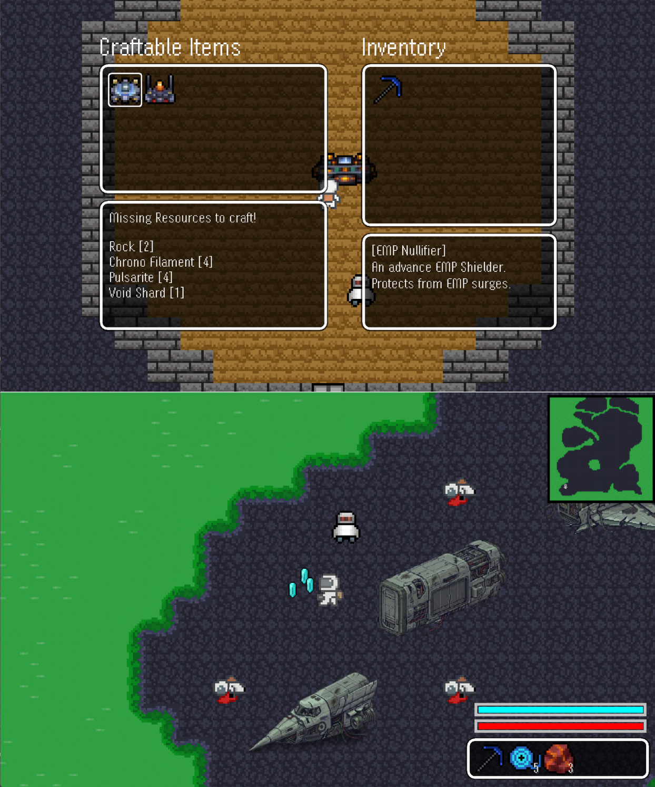

Space-Miner
GitHub2D Top-Down Survival/Adventure Game
Space-Miner is a personal project, independent of any coursework — a full survival/adventure game for Windows, built entirely from scratch in raw Java with no external libraries or game engines. Currently under active development with plans for release on major game stores.
- Built core gameplay systems: player movement, mining mechanics, particle effects, loot drops, custom pixel art, and a companion AI powered by a custom A* pathfinding algorithm.
- Implemented a slot-based inventory and crafting system with chest storage, hotbar controls, and full save/load using Java serialization.
- Built a lighting system with day/night cycles, gradient-based light sources, and breakable objects with particle feedback.
- Built the world and rendering system with Swing and AWT — tile-based worlds, smooth movement, screen culling, minimap generation, and depth-aware entity rendering.
- Added interactive UI with item descriptions, procedural resource placement, teleportation triggers, and debugging tools.
Java
AWT/Swing
Physics
Algorithms (A*)
World Generation